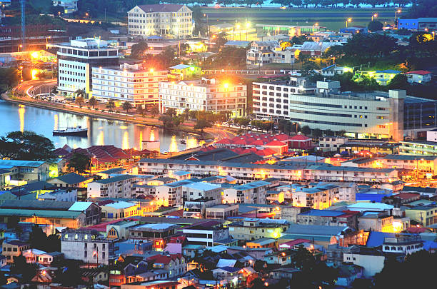
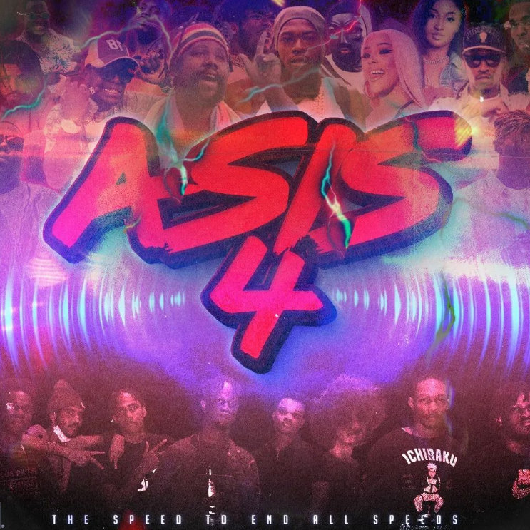

Know that all sins and all evils can be summed up in that one word; weakness
Summer 2022
Jonathan Astwood | 28th September,2022

Castries, St. Lucia. Location of GITS
During the summer of 2022 from June - August, I was an intern for Government Information
Technology Services Ltd., the technology department of the government of St. Lucia. I worked in
their networking team amongst some incredible people who treated me as their equal. I learned the basic
responsibilities of a computer networking technician and took on a part of the Border Control Management
System project where I was responsible for configuring and installing networking equipment at various
migration sites in St. Lucia.
The work experience was amazing. I really do believe that networking is what I'm cut out for, so long
as I work with cooperative, comminicating and hard working teammates. If I could go back and work there
in a permanent position, I would do it in a heartbeat.
Summer 2021
Jonathan Astwood | 27th September, 2022

Promotional Poster for ASIS 4
In the summer of 2021, my friends and I began what we did not know was going to be a biannual
event known as All Speed is Speed. It is a fete-style party event hosted at luxury villas for one
night and half a day. In the beginning the guest list comprised of a few close friends, but overtime has
grown to include many more invitees. The event is invite only, so more than likely everyone knows everyone,
and attendance is free. However, everyone must contribute something. In this way, the size of the crowd scales
with the available resources such as drinks and food.
The party has seen 4 iterations. Twice it has been hosted at a three-story villa in the "rich people area" of
Cap Estate, once at a 3 story house in Bonne Terre, and the latest one was hosted at a 3 story vacation house
in the seaside community of Canaries. The event has grown overtime in popularity and notoriety, and as mentioned
previously has reached it's 4th iteration, "The Speed to End All Speeds". Unfortunately, the organizers have gone
their separate ways but hope to continue the event sometime in 2025.